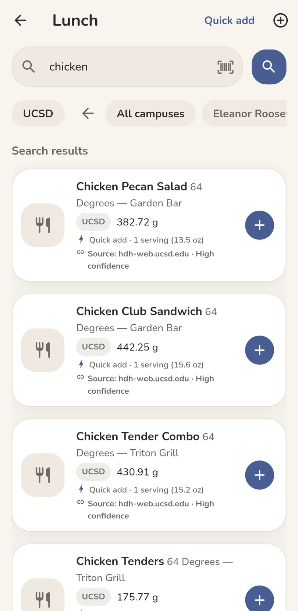
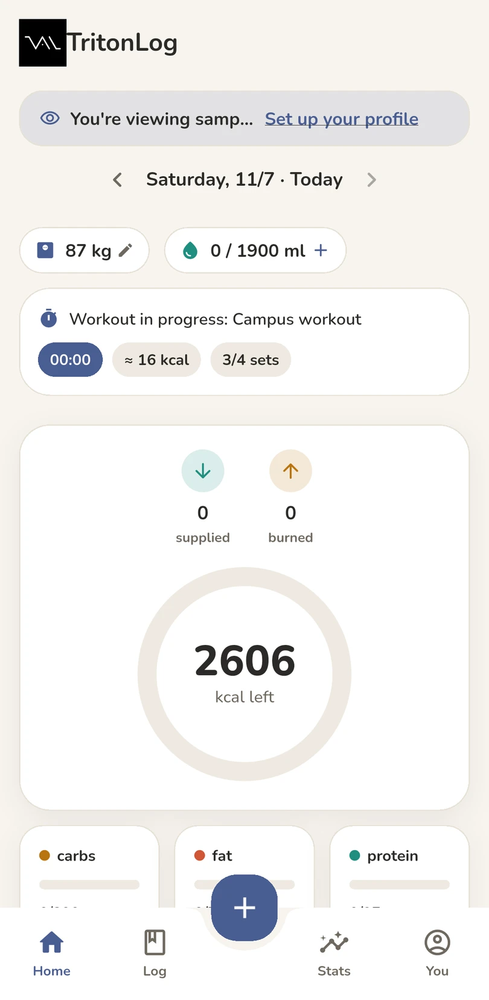
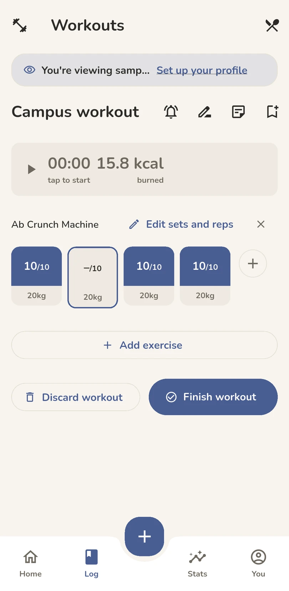
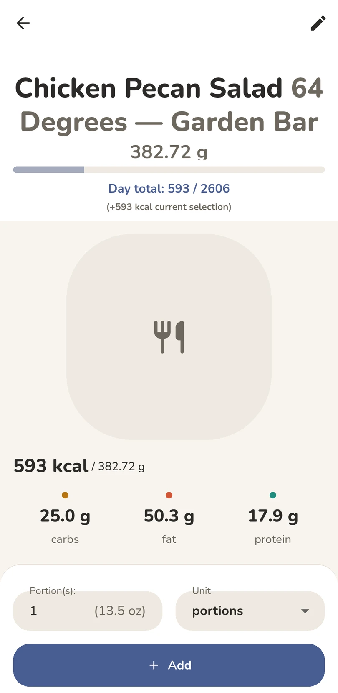
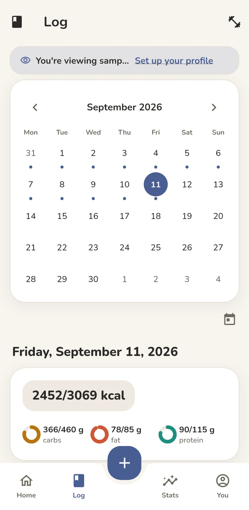
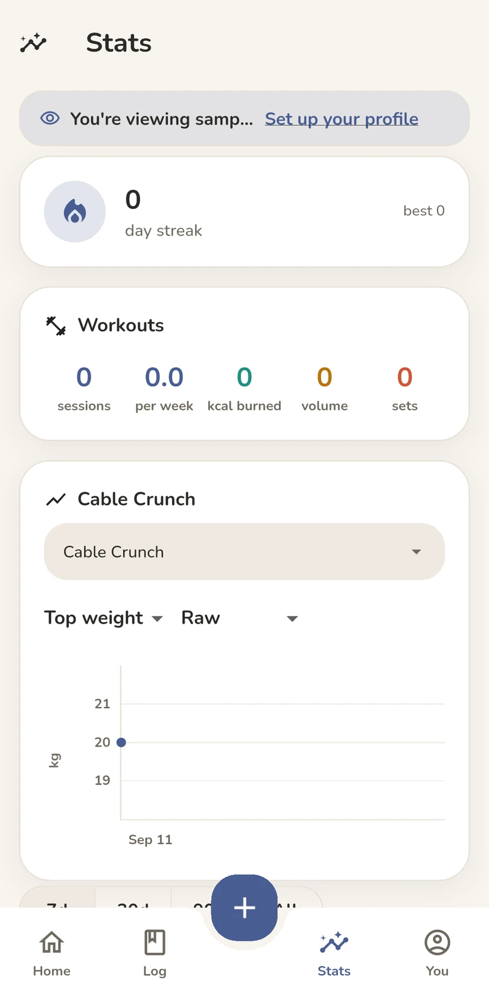

Your day has enough tabs open.
Lunch between lectures. A workout before heading home. TritonLog brings food and training into one place, so keeping a record isn’t another assignment.



Lunch between lectures. A workout before heading home. TritonLog brings food and training into one place, so keeping a record isn’t another assignment.
01 / Campus dining
Find campus dishes without rebuilding the nutrition label from scratch. Browse UCSD foods, see their sources, and start with a published serving when one is available.
Take a closer look
True servings, true calories. Don’t spend extra time measuring unless you need to.
02 / Training
Keep sets, reps and weight alongside your food log. Revisit a session, pick up a workout, and see the work you’ve recorded.
*Calories burned are estimates.
See the workout screen03 / A closer look
Swipe through the Android app.
A calorie overview, separate macro cards, and quick access to weight and water.
Campus foods, source information, and serving-based quick add.
Adjust quantity and units before adding a food to your day.
Sets, reps, load, and an estimated energy total alongside your session.

A calendar view for navigating your food history.

Review recorded activity and exercise history over time. Screens shown use sample data.
TritonLog was built to be a solution for me. Read about how I use it personally, and how it came to be.
Read my Blog